CAD architecture
This project developed an FIA-compliant, watertight F1 model and workflow to support aero development.
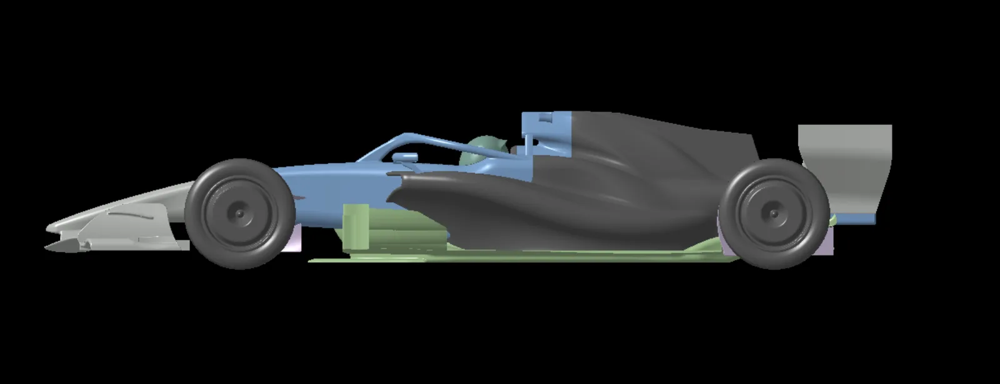
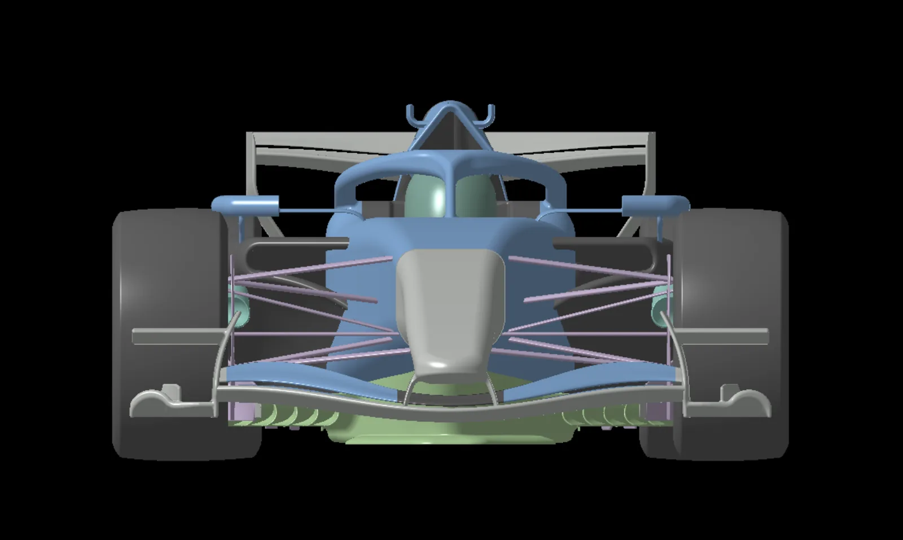
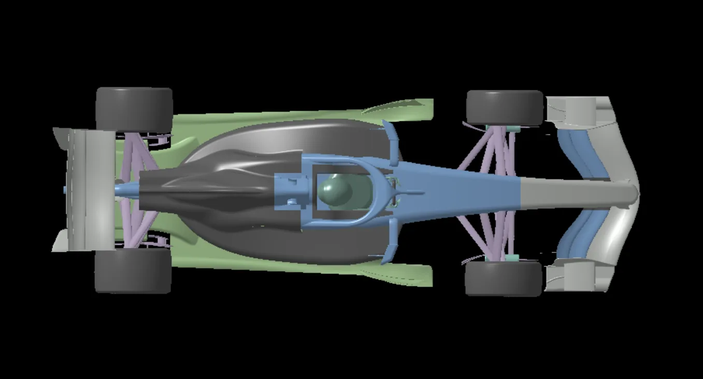
The model was built in CATIA GSD. Every component was designed as a single part before being trimmed together into a final watertight CFD model. This workflow was structured to enable fast geometry iteration and aero analysis.
Front wing and nose
The front wing manages the flow around the vehicle, with a major focus on pushing the front wheel wake outboard to improve downstream floor load and aero balance.
The AoA in the mid-section was backed off to feed better quality flow to the floor intake. A tube vortex generator and a mini-diffuser were designed to seal the low pressure region at the bottom of the endplate and generate additional downforce. The endplates were designed with the top section leaning inwards over the wing, to amplify the high pressure and shed a more powerful clockwise vortex that pushes the upper wheel wake down and out.
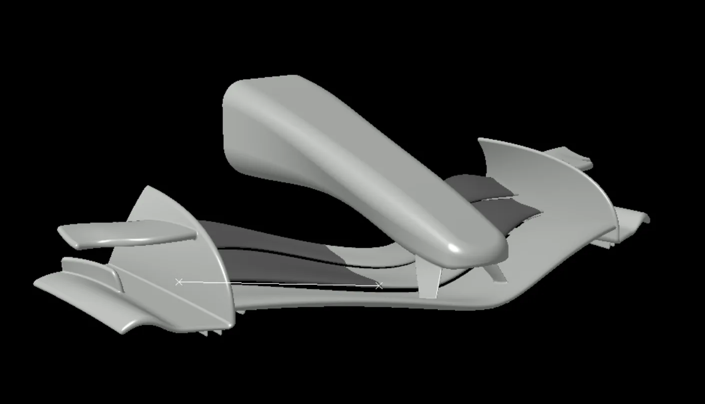
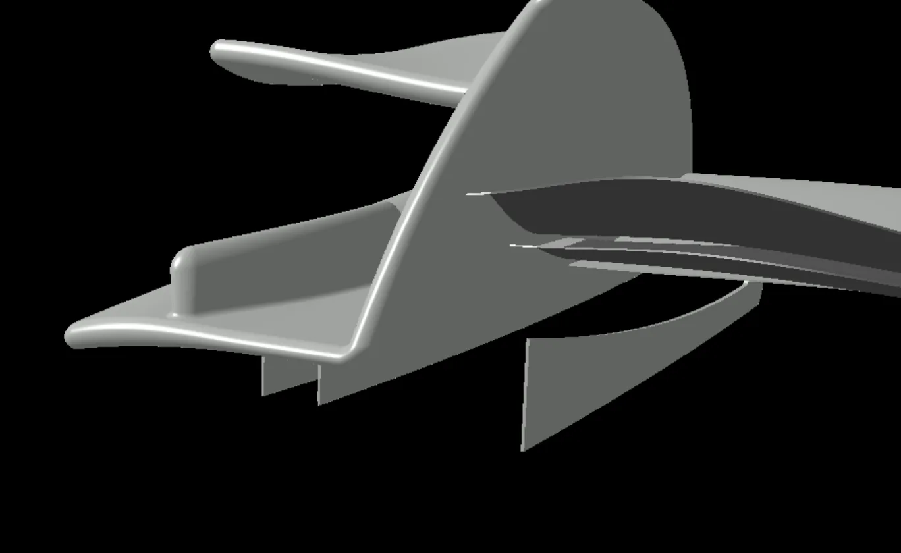
Floor, diffuser and floor board
The top and bottom of the inlet were designed to aid flow extraction and acceleration into the floor body. Five outwash leading edge elements were fitted, the maximum allowed by the rules, to power the underfloor through strong vortices and outwash the low energy flow coming from upstream.
The front two barge board elements were designed with an outwash intent, while the three elements connected in a cascade to the first were made to generate additional load and comply with the RS-Surface rules, keeping some porosity to improve flow extraction.
The diffuser has a concave first section and a less steep mid-to-rear section to allow a bigger pressure drop, aiming to keep the flow attached while controlling pressure recovery. The diffuser sidewall has an opened first section which, combined with the downwashing body and sidepods, feeds cleaner, higher energy flow to the diffuser.
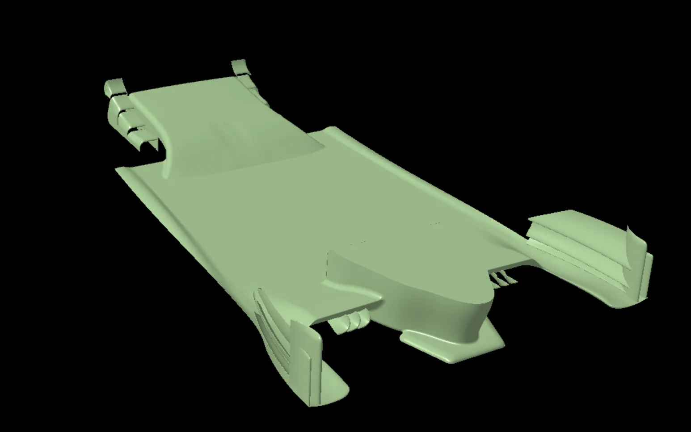
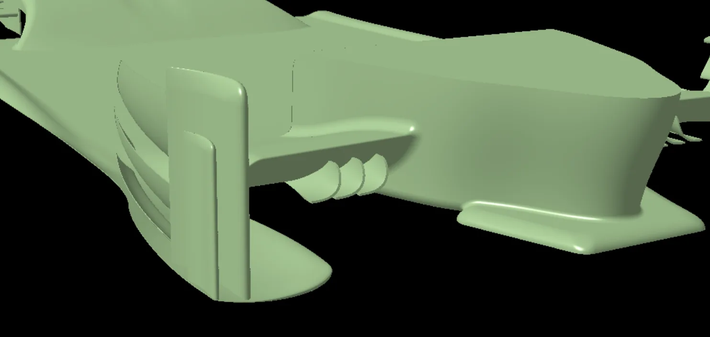
Sidepods and engine cover
The sidepods and engine cover were designed to keep the body as small as possible while leaving realistic space for the PU, transmission, radiators and so on. From an external aero standpoint, the engine cover guides the cockpit losses downstream and exits them under the rear wing, so the low energy flow does not affect its low pressure side.
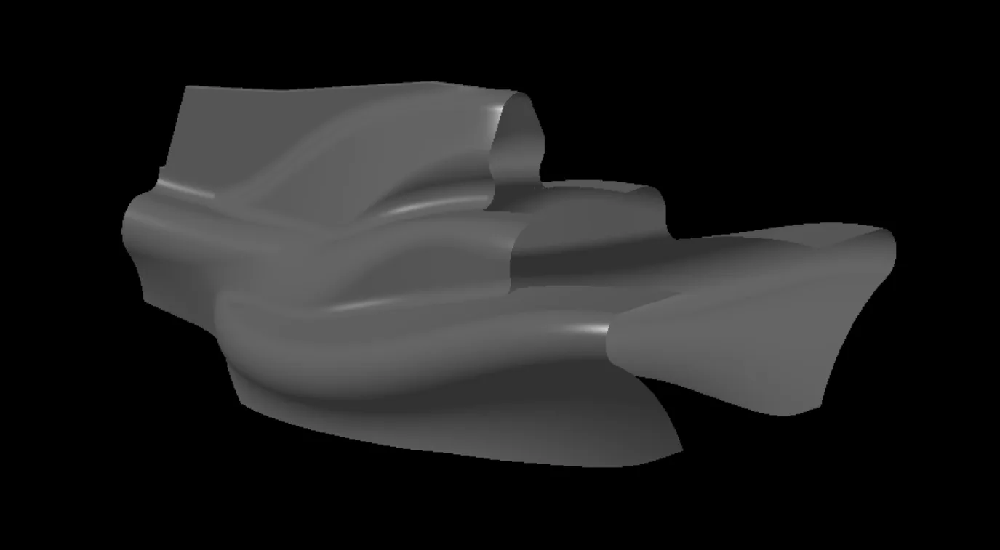
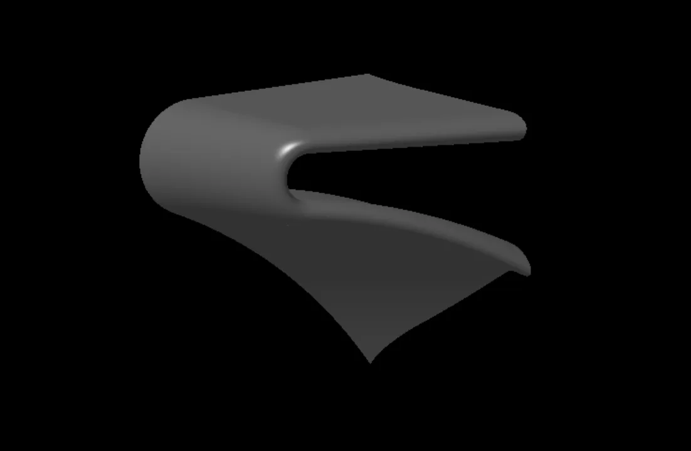
Rear wing
The rear wing was designed for maximum downforce. The endplates expand the flow in the rearmost and top sections. This controlled expansion recovers pressure on both the top and bottom surfaces, lowering the pressure delta and weakening the wingtip vortex, which reduces drag. The expansion at the rear of the endplate also helps the diffuser expand the undertray flow to ambient pressure, improving its efficiency.
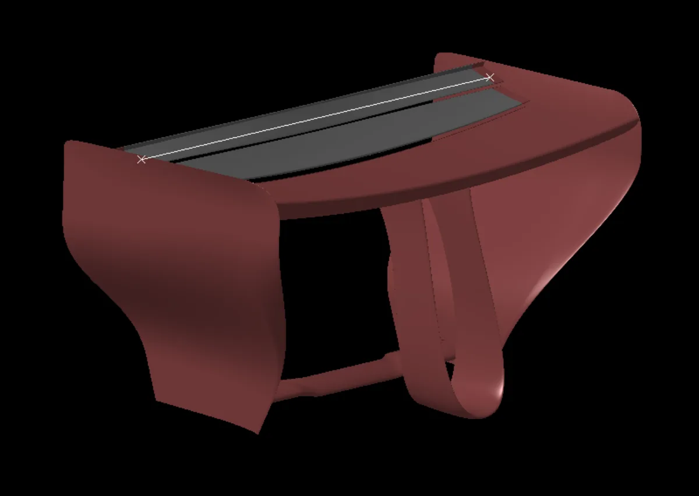
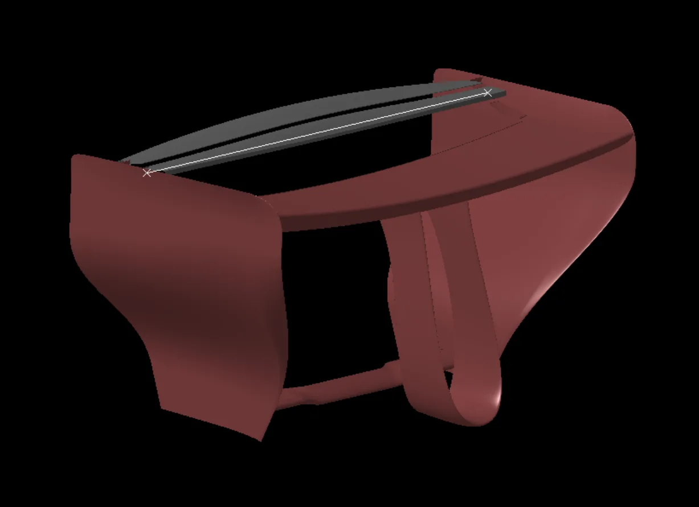
CFD trimmed model
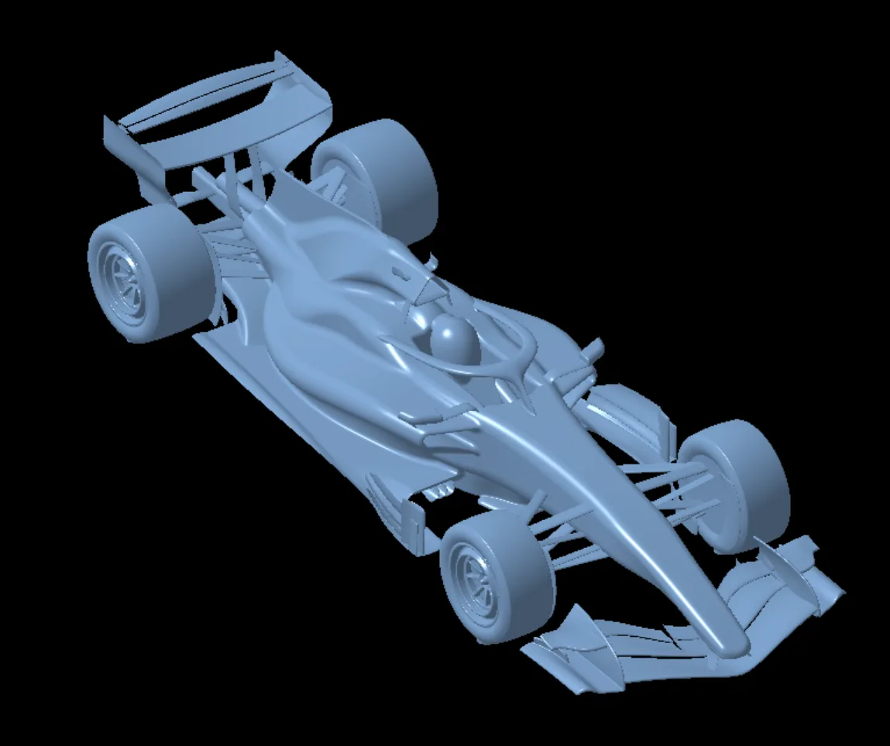